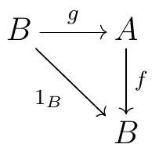

Section B.1 Categories
Most fields in modern mathematics follow the same basic recipe: there is a main type of object one wants to study - groups, rings, modules, topological spaces, etc - and a natural notion of arrows between these - group homomorphisms, ring homomorphisms, module homomorphisms, continuous maps, etc. The objects are often sets with some extra structure, and the arrows are often maps between the objects that preserve whatever that extra structure is. Category theory is born of this realization, by abstracting the basic notions that make math and studying them all at the same time. How many times have we felt a sense of déjà vu when learning about a new field of math? Category theory unifies all those ideas we have seen over and over in different contexts.
Category theory is an entire field of mathematics in its own right. As such, there is a lot to say about category theory, and unfortunately it doesn’t all fit in the little time we have to cover it in this course. You are strongly encouraged to learn more about category theory, for example from [ML98] or [Rie17].
Before we go any further, note that there is a long and fun story about why we use the word collection when describing the objects in a category. Not all collections are allowed to be sets, an issue that was first discovered by Russel with his famous Russel’s Paradox. Russel exposed the fact that one has to be careful with how we formalize set theory. We follow the ZFC (Zermelo-Fraenkel with choice, short for the Zermelo-Fraenkel axioms plus the Axiom of Choice) axiomatization of set theory, and while we will not discuss the details of this formalization here, you are encouraged to read more on the subject.
1
The collection of all sets that don’t contain themselves cannot be a set. Do you see why?
Subsection Definition and First Examples
“We’ll only use as much category theory as is necessary. Famous last words...”―Roman Abramovich
A category consists of a collection of objects and arrows or morphisms between those objects. While these are often sets and some kind of functions between them, beware that this will not always be the case. We will use the words morphism and arrows interchangeably, though arrow has the advantage of reminding us we are not necessarily talking about functions.
Definition B.1. Category.
A category \(\mathscr{C}\) consists of three different pieces of data:
- a collection of objects, \(\mathbf{ob}(\mathscr{C}),\)
- for each two objects, say \(A\) and \(B\text{,}\) a collection \(\operatorname{Hom}_{\mathscr{C}}(A, B)\) of arrows or morphisms from \(A\) to \(B\text{,}\) and
-
for each three objects \(A, B\text{,}\) and \(C\text{,}\) a composition\begin{equation*} \begin{gathered} \operatorname{Hom}_{\mathscr{C}}(A, B) \times \operatorname{Hom}_{\mathscr{C}}(B, C) \longrightarrow \operatorname{Hom}_{\mathscr{C}}(A, C) . \\ (f, g) \longmapsto g \circ f \end{gathered} \end{equation*}
We will often drop the \(\circ\) and write simply \(gf\) for \(g \circ f\text{.}\)
These ingredients satisfy the following axioms:
- The \(\operatorname{Hom}_{\mathscr{C}}(A, B)\) are all disjoint. In particular, if \(f\) is an arrow in \(\mathscr{C}\text{,}\) we can talk about its source \(A\) and its target \(B\) as the objects such that \(f \in \operatorname{Hom}_{\mathscr{C}}(A, B)\text{.}\)
- For each object \(A\text{,}\) there is an identity arrow \(1_{A} \in \operatorname{Hom}_{\mathscr{C}}(A, A)\) such that \(1_{A} \circ f=f\) and \(g \circ 1_{A}=g\) for all \(f \in \operatorname{Hom}_{\mathscr{C}}(B, A)\) and all \(g \in \operatorname{Hom}_{\mathscr{C}}(A, B)\text{.}\)
- Composition is associative: \(f \circ(g \circ h)=(f \circ g) \circ h\) for all appropriately chosen arrows.
Convention B.2.
We sometimes write \(f: A \rightarrow B\) or \(A \stackrel{f}{\rightarrow} B\) for an arrow \(f \in \operatorname{Hom}(A, B)\text{.}\)
Exercise B.3. Unique Identity Morphism.
Every object in a category has a unique identity morphism.
Solution.
Here are some categories you have likely encountered before:
Example B.4. Categories.
| Category | Objects | Morphisms |
| \(\Set\) | sets | functions |
| \(\Grp\) | groups | group homomorphisms |
| \(\Ab\) | abelian groups | abelian group homomorphisms |
| \(\Ring\) | rings | ring homomorphisms |
| \(R\Mod\) | \(R\)-modules | \(R\)-maps |
| \(\Top\) | topological spaces | continuous functions |
While the collections of objects and arrows might not actually be sets, sometimes they are.
Definition B.5. Locally Small.
A category \(\mathscr{C}\) is locally small if for all objects \(A\) and \(B\) in \(\mathscr{C}, \operatorname{Hom}_{\mathscr{C}}(A, B)\) is a set. A category \(\mathscr{C}\) is small if it is locally small and the collection of all objects in \(\mathscr{C}\) is a set.
In fact, one can define a small category as one where the collection of all arrows is a set. It follows immediately that the collection of all objects is also a set, since it must be a subset of the set of arrows - for each object, there is an identity arrow.
Many important categories are at least locally small.
Example B.6.
\(\Set\) is locally small but not small.
Definition B.7.
Categories where the objects are sets with some extra structure and the arrows are some kind of functions between the objects are called concrete.
All of the categories we have seen thus far have been conctrete, but this is not the case in general.
Example B.8. Non-Concrete Categories.
-
\(\PO(X)\).Given a partially ordered set \((X, \leqslant)\text{,}\) we can regard \(X\) itself as a category: the objects are the elements of \(X\text{,}\) and for each \(x\) and \(y\) in \(X, \operatorname{Hom}_{X}(x, y)\) is either a singleton if \(x \leqslant y\) or empty if \(x \neq y\text{.}\) There is only one possible way to define composition, and the transitive property of \(\leqslant\) guarantees that the composition of arrows is indeed well-defined: if there is an arrow \(i \rightarrow j\) and an arrow \(j \rightarrow k\text{,}\) then \(i \leqslant j\) and \(j \leqslant k\text{,}\) so \(i \leqslant k\) and thus there is a unique arrow \(i \rightarrow k\text{.}\) This category is locally small, since all nonempty \(\Hom\)-sets are in fact singletons. It is in fact small, since the objects are by construction the set \(X\text{.}\)
-
\(\mathbf{n}\).For each positive integer \(n\text{,}\) the category \(\mathbf{n}\) has \(n\) objects \(0,1, \ldots, n-1\) and \(\operatorname{Hom}(i, j)\) is either empty if \(i>j\) or a singleton if \(i \leqslant j\text{.}\) As Item 1, composition is defined in the only way possible, and things work out. This is the poset category for the poset \((\{0,1, \ldots, n-1\}, \leqslant)\) with the usual \(\leqslant\text{.}\)
-
\(\textbf{Mat}-k\).Fix a field \(k\text{.}\) We define a category \(\textbf{Mat}-k\) with objects all positive integers, and given two positive integers \(a\) and \(b\text{,}\) the \(\operatorname{Hom}\)-set \(\operatorname{Hom}(a, b)\) consists of all \(b \times a\) matrices with entries in \(k\text{.}\) The composition rule is given by product of matrices: given \(A \in \operatorname{Hom}(a, b)\) and \(B \in \operatorname{Hom}(b, c)\text{,}\) the composition \(B \circ A\) is the matrix \(B A \in \operatorname{Hom}(a, c)\text{.}\) For each object \(a\text{,}\) its identity arrow is given by the \(a \times a\) identity matrix.
Remark B.9.
A locally small category with just one element is completely determined by its unique \(\Hom\)-set; it thus consists of a set \(S\) with an associative operation that has an identity element, which we call a monoid.
Subsection Diagrams and Morphisms
“Make big plans; aim high in hope and work, remembering that a noble, logical diagram once recorded will not die.”―Daniel Burnham
A key insight we get from category theory is that many important concepts can be understood through diagrams. Homological algebra is in many ways the study of commutative diagrams. One way to formalize what a diagram is involves talking about functors, which we will discuss in Section 1.2; here is a more down to earth definition.
Definition B.10. Diagram.
A diagram in a category \(\mathscr{C}\) is a directed multigraph whose vertices are objects in \(\mathrm{C}\) and whose arrows/edges are morphisms in \(\mathscr{C}\text{.}\) A commutative diagram in \(\mathscr{C}\) is a diagram in which for each pair of vertices \(A\) and \(B\text{,}\) any two paths from \(A\) to \(B\) compose to the same morphism.
Example B.11. Commutative Diagram.
The diagram

commutes if and only if \(g f=v u\text{.}\)
There are some special types of arrows we will want to consider.
Definition B.12. Morphism Inverses.
Let \(\mathscr{C}\) be any category.
-
An arrow \(f \in \operatorname{Hom}_{\mathscr{C}}(A, B)\) is left invertible if there exists \(g \in \operatorname{Hom}_{\mathscr{C}}(B, A)\) such that \(g f=1_{A}\text{.}\) In this case, we say that \(g\) is the left inverse of \(f\text{.}\) So \(g\) is a left inverse of \(f\) if the diagram
.jpg) commutes.
commutes. -
An arrow \(f \in \operatorname{Hom}_{\mathscr{C}}(A, B)\) is right invertible if there exists \(g \in \operatorname{Hom}_{\mathscr{C}}(B, A)\) such that \(f g=1_{B}\text{.}\) In this case, we say that \(g\) is the right inverse of \(f\text{.}\) So \(g\) is a right inverse of \(f\) if the diagramcommutes.
- An arrow \(f \in \operatorname{Hom}_{\mathscr{C}}(A, B)\) is an isomorphism if there exists \(g \in \operatorname{Hom}_{\mathscr{C}}(B, A)\) such that \(g f=1_{A}\) and \(f g=1_{B}\text{.}\) Unsurprisingly, such an arrow \(g\) is called the inverse of \(f\text{.}\)
Example B.13. Isomorphisms.
- In \(\Grp\text{,}\) \(\Ring\text{,}\) and \(R\Mod\) the isomorphisms are the morphisms that are bijective functions.
- In contrast, in \(\Top\) the isomorphisms are the homeomorphisms, which are the bijective continuous functions with continuous inverses. These are not the same thing as just the bijective continuous functions.
Subsection Opposite Categories and Subcategories
“The life of this world is nothing but the harmony of opposites.”―Rumi
We will now continue to follow a familiar pattern and define the related concepts one can guess should be defined.
Definition B.14. Subcategory.
A subcategory \(\mathscr{C}\) of a category \(\mathscr{D}\) consists of a subcollection of the objects of \(\mathscr{D}\) and a subcollection of the morphisms of \(\mathscr{D}\) such that the following hold:
- For every object \(C\) in \(\mathscr{C}\text{,}\) the arrow \(1_{C} \in \operatorname{Hom}_{\mathscr{D}}(C, C)\) is an arrow in \(\mathscr{C}\text{.}\)
- For every arrow in \(\mathscr{C}\text{,}\) its source and target in \(\mathscr{D}\) are objects in \(\mathscr{C}\text{.}\)
- For every pair of arrows \(f\) and \(g\) in \(\mathscr{C}\) such that \(f g\) is an arrow that makes sense in \(\mathscr{D}\text{,}\) \(f g\) is an arrow in \(\mathscr{C}\text{.}\)
In particular, \(\mathscr{C}\) is a category in its own right.
Example B.15. Subcategories.
The category of finitely generated \(R\)-modules with \(R\)-module homomorphisms is a subcategory of \(R\)\(\Mod\text{.}\)
Example B.16. Subcategories of Vector Spaces.
Let \(k\) be a field.
- The collection of finite dimensional \(k\)-vector spaces with all linear transformations is a category.
- The collection of all \(n\)-dimensional \(k\)-vector spaces with all linear transformations is a category.
- The collection of all \(k\)-vector spaces (or \(n\)-dimensional vector spaces) with linear isomorphisms is a category.
- The collection of all \(k\)-vector spaces (or \(n\)-dimensional vector spaces) with nonzero linear transformations is not a category, since it is not closed under composition.
- The collection of all \(n\)-dimensional vector spaces with linear transformations of determinant 0 is not a category, since it does not have identity maps.
Definition B.17. Full Subcategory.
A subcategory \(\mathscr{C}\) of \(\mathscr{D}\) is a full subcategory if \(\mathscr{C}\) includes all of the arrows in \(\mathscr{D}\) between any two objects in \(\mathscr{C}\text{.}\)
Example B.18. Full Subcategories.
- The category \(\mathbf{Ab}\) of abelian groups is a full subcategory of \(\Grp\text{.}\)
- Since every group is a set, and every homomorphism is a function, \(\Grp\) is a subcategory of \(\Set\text{.}\) However, not every function between two groups is a group homomorphism, so \(\Grp\) is not a full subcategory of \(\Set\text{.}\)
- The category whose objects are all sets and with arrows all bijections is a subcategory of \(\Set\) that is not full.
Here is another way of constructing a new category out of an old one.
Definition B.19. Opposite Category.
Let \(\mathscr{C}\) be a category. The opposite category of \(\mathscr{C}\text{,}\) denoted \(\mathscr{C}^{op}\text{,}\) is a category whose objects are the objects of \(\mathscr{C}\text{,}\) and such that each arrow \(f \in \operatorname{Hom}_{\mathscr{C} \text { op }}(A, B)\) is the same as some arrow in \(\operatorname{Hom}_{\mathscr{C}}(B, A)\text{.}\) The composition \(f g\) of two morphisms \(f\) and \(g\) in \(\mathscr{C}^{\text {op }}\) is defined as the composition \(g f\) in \(\mathscr{C}\text{.}\)
Many objects and concepts one might want to describe are obtained from existing ones by flipping the arrows. Opposite categories give us the formal framework to talk about such things. We will often want to refer to dual notions, which will essentially mean considering the same notion in a category \(\mathscr{C}\) and in the opposite category \(\mathscr{C}^{\mathrm{op}}\text{;}\) in practice, this means we should flip all the arrows involved. We will see examples of this later on.
The dual category construction gives us a formal framework to talk about dual notions. We will often make a statement in a category \(\mathscr{C}\) and make comments about the dual statement; in practice, this corresponds to simply switching the way all arrows go. Here are some examples of dual notions and statements:
| source | target |
| epi | mono |
| \(g\) is a right inverse for \(f\) | \(g\) is a left inverse for \(f\) |
| \(f\) is invertible | \(f\) is invertible |
| initial objects | terminal objects |
| homology | cohomology |
Note that the dual of the dual is the original statement; we can make this more formal by saying that \(\left(\mathscr{C}^{\mathrm{op}}\right)^{\text {op }}=\mathscr{C}\text{.}\) Sometimes we can easily prove a statement by dualizing; however, this is not always straightforward, and one needs to carefully dualize all portions of the statement in question. Nevertheless, Sanders MacLane, one of the fathers of category theory, wrote that "If any statement about a category is deducible from the axioms for a category, the dual statement is likely deducible". One of the upshots of duality is that any theorem in category theory must simultaneously prove two theorems: the original statement and its dual. But for this to hold, we need proofs that use the abstraction of a purely categorical proof.
Opposite categories are more interesting than they might appear at first; there is more than just flipping all the arrows. For example, consider the opposite category of Set. For any nonempty set \(X\text{,}\) there is a unique morphism in Set (a function) \(i: \emptyset \rightarrow X\text{,}\) but there are no functions \(X \rightarrow \emptyset\text{,}\) so \(i^{\text {op }}: \emptyset \rightarrow X\) is not a function. Thus thinking about Set \({ }^{\text {op }}\) is a bit difficult. One can show that this is the category of complete atomic Boolean algebras - but we won’t concern ourselves with what that means.